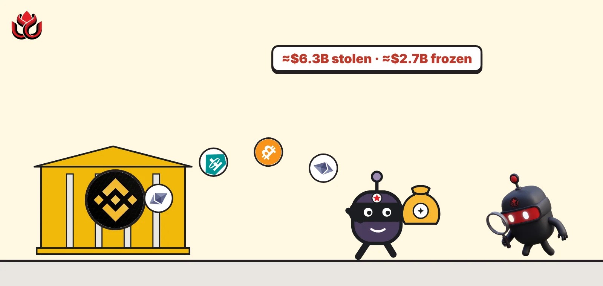
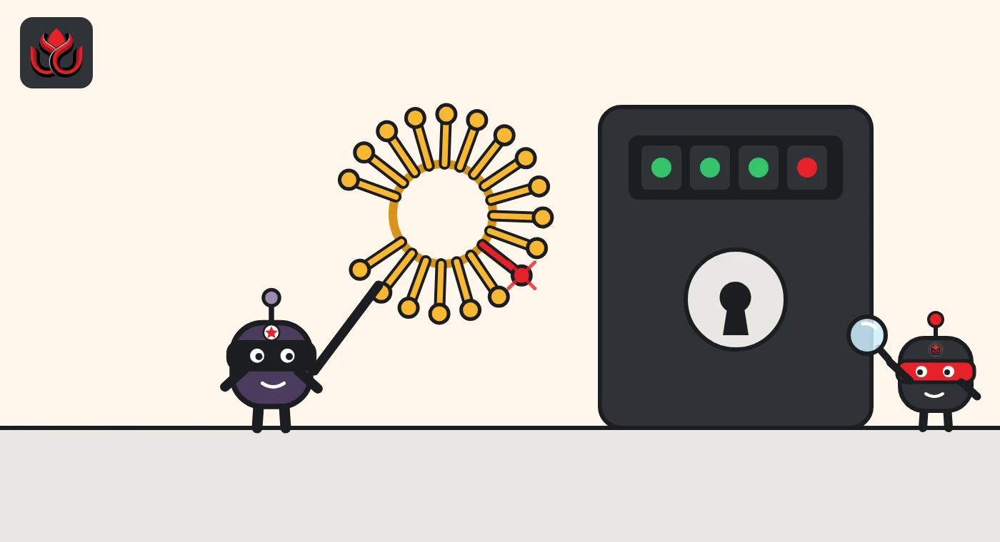

Binance lost a record $6.3 billion. Who froze $2.7 billion of it?
Attackers emptied Binance's hot wallets on October 29 in the biggest crypto theft on record. Stablecoin issuers froze about $2.7 billion, the FBI blames North Korea, and Binance says users will not pay.

Key points
- Binance says attackers took about $6.3 billion from its hot wallets on October 29, starting at 4:05 p.m. ET. TRM Labs calls it the largest crypto theft on record.
- About $2.7 billion has been frozen on-chain, mostly by Tether and Circle. The FBI attributes the theft to North Korea's "TraderTraitor" activity.
- Binance reopened withdrawals on November 1 and says it had replaced 90% of the stolen assets by October 31.
What DeepSea's data shows
DeepSea's Hacks list puts the Binance case first, at $3.40 billion. That figure covers Ethereum only. On its case page, DeepSea says about $3.3 billion to $3.5 billion left Binance wallets on Ethereum and that Bitcoin and Tron outflows have not been linked to the attacker. Binance and TRM Labs count those chains and give a total of about $6.3 billion. TRM's Ethereum figure alone is $3.79 billion.
DeepSea's tracker shows the main receiving wallet took in $2.87 billion, including $1.98 billion from the hot wallet labeled Binance 14. The attacker then split funds across 133 wallets, up to two hops from the first attacker wallet, and made 200 tracked swaps worth $66.59 million, 92% of them into ETH. One holding wallet keeps about 195,000 ETH and has not spent it. The last tracked movement was 40 hours before our check.
DeepSea also reports that funds from this hack and from September's Bitget exploit went to the same address, linking the two cases on-chain. Its page counts about $2.4 billion in USDT and USDC frozen by issuers, below TRM's $2.7 billion and Binance's $3 billion. Parts of the page's summary predate Binance's confirmation of the hack.
Data: DeepSea (desea.io), checked November 1, 2026, 11:41 p.m. ET.
What happened
Binance said its hot wallets were compromised at around 4:05 p.m. ET on October 29, with losses of about $6.3 billion in tokens (Binance Recovery Update #2). Hot wallets stay online so an exchange can process withdrawals fast. Blockchain analytics firm TRM Labs puts the total at $6.36 billion across 10 blockchains, about four times the $1.5 billion taken from Bybit in February 2025.
Binance founder Changpeng Zhao, who says he no longer manages the exchange, posted about an hour after the first transfers. "It does look like a hack on Binance," he wrote on X, thanking Tether and Circle for freezing about $971 million and $823 million.
Timeline
Five Binance XRP Ledger wallets start sending 233.46 million XRP to one attacker address.
The Bitcoin hot wallet sends 18,270 BTC. The same transaction carries 50 signed EIP-7702 authorizations. The Tron wallet sends 612.7 million USDT within two minutes.
The Ethereum hot wallet is swept: 167,464 ETH and 63 tokens, including 1.615 billion USDT.
Tether freezes 971.1 million USDT in the main receiving wallet. Circle freezes 823 million USDC at 5:04 p.m. ET.
CZ says on X that it looks like a hack.
Arbitrum's Security Council moves 8,426 ETH and 74.6 million ARB out of an attacker wallet.
Co-CEO Richard Teng says 90% of the stolen assets have been replaced.
The FBI attributes the theft to North Korea.
Withdrawals restart in phases. All 15 first-phase networks and assets are live by 7:36 a.m. ET.

Where the money went
Ethereum took the biggest hit, about $3.79 billion, according to TRM. The attacker moved stablecoins first, because issuers can freeze them. TRM says about 325 million USDT was sold for roughly 122,300 ETH, at a discount of more than 10% to the market price. A second wallet put 60 million USDT into the lending platform Aave and borrowed about 19,760 ETH before Aave froze the affected markets.
The FBI says the attackers are converting stolen assets mainly into ether. TRM counts more than 420,000 ETH and 18,270 BTC, worth about $2.4 billion, still in attacker hands and out of issuers' reach.
Assets drained from Binance wallets, by blockchain
US$ billion, valued at the time of transfer
Source: TRM Labs, on-chain data as of 8:30 p.m. ET on October 29, 2026. Total about $6.36 billion.
How it happened
Binance said early findings pointed to a compromised laptop, but a later review found additional points of breach and no evidence that wallet private keys leaked (Binance). It has not yet published its full technical report.
On Ethereum, the attacker used EIP-7702, a feature added in May 2025 that lets a wallet sign an authorization handing control to a smart contract. Each authorization works for only one value of the wallet's transaction counter, or nonce. TRM says the attacker held 50 authorizations for 50 consecutive values, so one was sure to match the busy hot wallet when the attack began. TRM says staging started at least 36 hours earlier.
Who froze the funds
Freezes confirmed on-chain by TRM total about $2.7 billion, a little over 40% of the theft. Binance puts the frozen amount at about $3 billion (Binance).
Who froze the attacker's funds
US$ billion, freezes confirmed on-chain
Source: TRM Labs. Total about $2.7 billion. Binance cites about $3 billion; DeepSea counts about $2.4 billion in USDT and USDC.
How Binance is paying
Binance said it set aside more than $6.34 billion of company funds, including $5 billion already held in the exact stolen tokens, which covered about 80% of the loss (Binance). The rest is being bought through market and OTC channels. "Our users will not bear the financial impact of this incident," co-CEO Richard Teng wrote on October 31, when coverage reached 90%.
On the first day of withdrawals, Binance said it processed $4.649 billion out and $1.01 billion in, a net outflow of about $3.64 billion, or 2.1% of its $171 billion in assets under management (Binance on X). It expects an updated proof of reserves report on November 2, based on a snapshot taken at 8:00 p.m. ET on October 30. These figures come from Binance and have not been independently verified.
Share of the loss Binance says it holds or has replaced
Percent, as announced by Binance
Source: Binance Recovery Update #2 and Richard Teng on X. Not independently verified.
Who is behind it
The FBI said North Korea was responsible and calls the activity "TraderTraitor." With the Secret Service and IRS-CI, it published attacker addresses and urged node operators, DeFi services and exchanges to block them. TRM notes the FBI earlier tied the same group to the Bybit theft. Binance has not named the attacker.
LC Insight analysis
This section is our reading of the facts above, not a statement of fact.
- We think Binance's final loss could be well below $6.3 billion. Most frozen funds are USDT and USDC, which Tether and Circle can technically reissue. If roughly $2.6 billion came back, the net hit would be closer to $3.7 billion, but no issuer has announced any such decision.
- The attack looks planned, not opportunistic. Holding 50 pre-signed authorizations and staging for at least 36 hours suggests the intruder sat inside Binance's signing setup for a long time unnoticed. That is the question Binance's technical report has to answer.
- Day one passed without a run. A net outflow of 2.1% of assets is large in dollars but small for an exchange of this size. The proof of reserves report is the next real test.
- The gap between DeepSea's $3.40 billion and the $6.3 billion headline matters for recovery. Ethereum funds are traced in detail. Bitcoin and Tron funds still need public tracing that links them to the attacker, and that is where exchanges and investigators should focus.
- We expect other exchanges to audit how their hot wallets handle EIP-7702 authorizations in the coming weeks.
What's next
- Binance's updated proof of reserves report from its October 30 snapshot
- The technical postmortem Binance promised
- Dates for the second withdrawal phase
- Any movement from the DeepSea-tracked wallet holding about 195,000 ETH
- Whether Tether and Circle reissue or return frozen tokens
Disclaimer. This article is based on public information and the sources listed below as of the update time shown. It is for information only and is not investment, legal or tax advice. Figures may change as companies and authorities publish new data.
Sources
- Binance, Security Incident | Recovery Update #2 (October 30, 2026)
- Binance on X, withdrawal and flows update (November 1, 2026)
- Richard Teng on X (October 31, 2026)
- Changpeng Zhao (CZ) on X (October 29, 2026)
- FBI Cyber Branch on X, TraderTraitor attribution (October 31, 2026)
- TRM Labs, on-chain analysis of the Binance theft (October 29, 2026)
- DeepSea, Binance hack tracker and Hacks list